Введение в программирование на языке R
Семинар 1
Для чего используется R
- анализ больших объемов данных
- Моделирование и симуляции
- Стаистический анализ
- Различные вычислительные задачи
- Геномика
- Геоинформатика, геостатистика
- Численная экология
- Анализ изображений
- Эконометрика
3 уровня организации языков и где на них находится R
- Высокиоуровневые vs Низкоуровневые
- Общие vs Специализированные
- Интерпретируемые vs компилируемые
Структура языка R
- Основой был язык S
- Основные функции написаны на самом R
Особые задачи
- Multiple testing
- MCMC
- Bias
- Gauss
- Plotting
- Sequencing
Графическая подсистема
plot(density(rnorm(100)),col="red")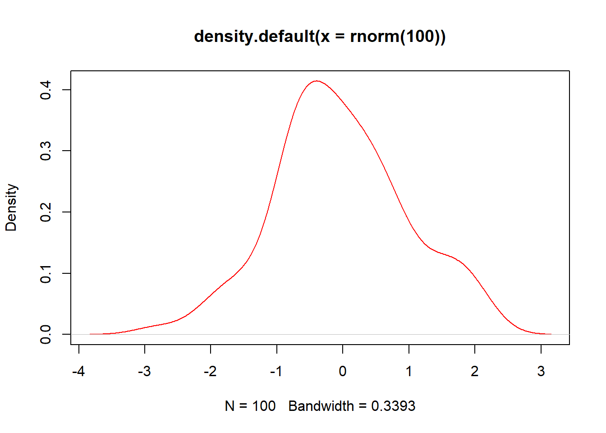
Способы задания переменной значения
x=5
x<-5
assign("x",5)
x## [1] 5Команды и базовые функции
function c()
x<-c(1,3,6,7);Типы векторов
- numerical
- character
- logical
(есть еще факторы, но они стоят немного особняком)
char<-c("8","edge","turn8k");
logic<-c(TRUE,FALSE,TRUE,FALSE)Динамическая типизация
dynam<-c(8,"dds", TRUE)
dynam<-c(1,0,1,1,TRUE)
dynam## [1] 1 0 1 1 1Приоритет Char->integer->Logic
Функции
x=function(arg1,arg2,…)
Invocation - function call
Аргументы функции:
- именные
- позицонные
Пример позиционных: log(x,base)
log(x,10)## [1] 0.0000000 0.4771213 0.7781513 0.8450980Пример именных: log(base=base,x)
log(base=10,x)## [1] 0.0000000 0.4771213 0.7781513 0.8450980Логические операции
,<,<=,>=,==
x=10
x<5## [1] FALSEx>5## [1] TRUEx==10## [1] TRUEМаетматические операции
+, -, *, /, ^, sin(), cos(), sqrt(), log()
x^10## [1] 1e+10Задание
x=10/(5-5)
x## [1] InfПравила повтора векторов (Recycling Rule)
x<-c(2,4,5,3,-4,0)
x*5## [1] 10 20 25 15 -20 0y<-c(5,3)
x*y## [1] 10 12 25 9 -20 0z<-c(1,2,3,4)
x*z## Warning in x * z: longer object length is not a multiple of shorter object
## length## [1] 2 8 15 12 -4 0length(x)## [1] 6Больше базовых функций
log(), mean(), min(), max(), sum(), prod(), abs()
x<-c(3,4,6,-7,8)
mean = sum(x)/ length(x)
mean## [1] 2.8Последовательности
x=2:10
y=5:1
z=-5:10
w=-5:-10
x## [1] 2 3 4 5 6 7 8 9 10y## [1] 5 4 3 2 1z## [1] -5 -4 -3 -2 -1 0 1 2 3 4 5 6 7 8 9 10w## [1] -5 -6 -7 -8 -9 -10Последовательности
seq(from=,to=,by=)
z=seq(2,5,.5)
x=seq(3,9.1,.1)
y=seq(9,3,-.2)
length(x)## [1] 62length(y)## [1] 31x*y## [1] 27.00 27.28 27.52 27.72 27.88 28.00 28.08 28.12 28.12 28.08 28.00
## [12] 27.88 27.72 27.52 27.28 27.00 26.68 26.32 25.92 25.48 25.00 24.48
## [23] 23.92 23.32 22.68 22.00 21.28 20.52 19.72 18.88 18.00 54.90 54.56
## [34] 54.18 53.76 53.30 52.80 52.26 51.68 51.06 50.40 49.70 48.96 48.18
## [45] 47.36 46.50 45.60 44.66 43.68 42.66 41.60 40.50 39.36 38.18 36.96
## [56] 35.70 34.40 33.06 31.68 30.26 28.80 27.30Последовательности
rep(x, times=)
x=c("A","B","C")
rep(x,4)## [1] "A" "B" "C" "A" "B" "C" "A" "B" "C" "A" "B" "C"Логические вектора
mode(x)
x<-1:10
y<-x<=-5
mode(x)## [1] "numeric"mode(y)## [1] "logical"mode(mode(x))## [1] "character"Индексация векторов
В R нумерация элементов начинается с 1
x=1:20
x[2]## [1] 2x[0]## integer(0)x[5:9]## [1] 5 6 7 8 9x[c(3,7,8,9,20)]## [1] 3 7 8 9 20x[-19]## [1] 1 2 3 4 5 6 7 8 9 10 11 12 13 14 15 16 17 18 20x[-(1:6)]## [1] 7 8 9 10 11 12 13 14 15 16 17 18 19 20x[x>10]## [1] 11 12 13 14 15 16 17 18 19 20x[TRUE]## [1] 1 2 3 4 5 6 7 8 9 10 11 12 13 14 15 16 17 18 19 20y=c(TRUE,FALSE)
x[y]## [1] 1 3 5 7 9 11 13 15 17 19Добавление элементов к вектору
vector<-c()
v2<-c(TRUE,FALSE,TRUE,TRUE,FALSE,TRUE)
vector=c(v2,vector);
vector=c(F,vector);
x=1:3
x=c(5,x)
x## [1] 5 1 2 3Имена элементов векторов
x=1:5
names(x)## NULLnames(x)<-c("Первый","Второй","Третий","Четвертый","Первый")
names(x)## [1] "Первый" "Второй" "Третий" "Четвертый" "Первый"x["Первый"]## Первый
## 1Свойства векторов
length() names() mode()
log(3) == log(3, base=exp(1))## [1] TRUEx=seq(5,100,.1)
x[length(x)]## [1] 100Функции sort и order
x<-c(-10,2,78,34,-98,23,0,-8)
order(x)## [1] 5 1 8 7 2 6 4 3sort(x)## [1] -98 -10 -8 0 2 23 34 78sort(x) == x[order(x)]## [1] TRUE TRUE TRUE TRUE TRUE TRUE TRUE TRUElog(exp(1))
Семинар 2
Задание. Получите из данного вектора вектор в котором будет обратный порядок элементов
a<-seq(-8,10,.5)
a## [1] -8.0 -7.5 -7.0 -6.5 -6.0 -5.5 -5.0 -4.5 -4.0 -3.5 -3.0 -2.5 -2.0 -1.5
## [15] -1.0 -0.5 0.0 0.5 1.0 1.5 2.0 2.5 3.0 3.5 4.0 4.5 5.0 5.5
## [29] 6.0 6.5 7.0 7.5 8.0 8.5 9.0 9.5 10.0x=a[length(a):1]
x## [1] 10.0 9.5 9.0 8.5 8.0 7.5 7.0 6.5 6.0 5.5 5.0 4.5 4.0 3.5
## [15] 3.0 2.5 2.0 1.5 1.0 0.5 0.0 -0.5 -1.0 -1.5 -2.0 -2.5 -3.0 -3.5
## [29] -4.0 -4.5 -5.0 -5.5 -6.0 -6.5 -7.0 -7.5 -8.0Задание. Вставьте число 99 в середину данного вектора
y=c(a[1:round(length(a)/2)],99,a[(round(length(a)/2)+1):length(a)])Задание. Докажите, что arcos(cos(x))=x
x=0:3
y=acos(cos(x))
x==y## [1] TRUE FALSE TRUE FALSEx=c(sin(10),log(5,8),log(3,exp(1)),log(38.6,10),cos(pi+1), exp(1)^(cos(0)),atan(+Inf))
names(x)=c("sin(10)","log(5,8)","ln3","lg(38.6)","cos(pi+1)","e^cos(0)","arctn(+Inf)");
sort(x)## sin(10) cos(pi+1) log(5,8) ln3 arctn(+Inf) lg(38.6)
## -0.5440211 -0.5403023 0.7739760 1.0986123 1.5707963 1.5865873
## e^cos(0)
## 2.7182818Логические операции
- ! = not
- | = or
- & = and
A U B - объединение
x=seq(-10,10,.01)
y=x[(x>-10 & x< -3) | (x>0 & x<6 & x!=3)]Факторы и функция summary()
x = factor(“Mouse”)
f=c(rep("mouse",3),rep("rat",2),rep("fly",11))
f=rep(c("mouse","rat","fly"),c(3,2,11))
x=factor(f)
summary(x)## fly mouse rat
## 11 3 2summary(f)## Length Class Mode
## 16 character charactersummary(1:10)## Min. 1st Qu. Median Mean 3rd Qu. Max.
## 1.00 3.25 5.50 5.50 7.75 10.000
summary(1:10)[4]## Mean
## 5.5Задание посчитайте долю каждого нуклеотида в векторе содержащем последовательность ДНК
dna=factor(rep(c("T","G","C","A"),c(16,38,6,10)))
ratio=summary(dna)/sum(summary(dna))Функция sample()
Создает подвыборку из выборки, в том числе путем перемешивания
sample: * mixing * generating
dna=factor(rep(c("T","G","C","A"),c(16,38,6,10)))
sample(dna)## [1] T G T A T G G G T T T G G A C G G G A G G G A G T G G G C G G G T G C
## [36] A A A G G G T T G C G T G G G T T G G G C G G G G C G G T T A T G A A
## Levels: A C G Tdna## [1] T T T T T T T T T T T T T T T T G G G G G G G G G G G G G G G G G G G
## [36] G G G G G G G G G G G G G G G G G G G C C C C C C A A A A A A A A A A
## Levels: A C G T# sample(dna,size=84, replace=FALSE)
# подобный код выдаст ошибку, т.к. мы просим создать выборку больше исходника
# а вот следующий код будет работать, т.к. replace=TRUE генерирует выборки любого
# размера исходя из пропопрций элемнтов данной выборки
sample(dna,size=84, replace=TRUE)## [1] G A G A C T G G T T T T G G G G G T T G G G G G G A T G G G A G T A G
## [36] G A A A G G G G G G T C T G G C T G T G A G T T C T T G A T A A T C G
## [71] G G T T A G A G G G T C T G
## Levels: A C G Tsampledna=sample(c("A","T","G","C"), size=10000,replace=TRUE)
ratio=summary(factor(sampledna))/length(sampledna)
ratio2=summary(factor(dna))/length(dna)
ratio## A C G T
## 0.2517 0.2533 0.2462 0.2488ratio2## A C G T
## 0.14285714 0.08571429 0.54285714 0.22857143Функции union(x,y),intersect(x,y),setdiff(x,y)
x=1:10
y=6:14
union(x,y)## [1] 1 2 3 4 5 6 7 8 9 10 11 12 13 14intersect(x,y)## [1] 6 7 8 9 10setdiff(x,y)## [1] 1 2 3 4 5setdiff(y,x)## [1] 11 12 13 14Уничтожение всех переменных в памяти
rm(list=ls())Функция cumsum()
cumsum(1:10)## [1] 1 3 6 10 15 21 28 36 45 55Задание. Создайте длинные последовательности с заданными пропорциями элементов
dna2=sample(c("A","T","G","G","G","C"), size=3826513,replace=TRUE)
ratio=summary(factor(dna2))/length(dna2)
ratio## A C G T
## 0.1669063 0.1664437 0.4997359 0.1669141dna2=sample(c("A","T","G","C"), size=3826513,prob=c(.5/3,.5/3,.5,.5/3),replace=TRUE)
ratio=summary(factor(dna2))/length(dna2)
ratio## A C G T
## 0.1664411 0.1669460 0.5000689 0.1665441## Data frames -Таблицы
Выборки из таблиц
iris[iris$Species==c("setosa","virginica"),]## Sepal.Length Sepal.Width Petal.Length Petal.Width Species
## 1 5.1 3.5 1.4 0.2 setosa
## 3 4.7 3.2 1.3 0.2 setosa
## 5 5.0 3.6 1.4 0.2 setosa
## 7 4.6 3.4 1.4 0.3 setosa
## 9 4.4 2.9 1.4 0.2 setosa
## 11 5.4 3.7 1.5 0.2 setosa
## 13 4.8 3.0 1.4 0.1 setosa
## 15 5.8 4.0 1.2 0.2 setosa
## 17 5.4 3.9 1.3 0.4 setosa
## 19 5.7 3.8 1.7 0.3 setosa
## 21 5.4 3.4 1.7 0.2 setosa
## 23 4.6 3.6 1.0 0.2 setosa
## 25 4.8 3.4 1.9 0.2 setosa
## 27 5.0 3.4 1.6 0.4 setosa
## 29 5.2 3.4 1.4 0.2 setosa
## 31 4.8 3.1 1.6 0.2 setosa
## 33 5.2 4.1 1.5 0.1 setosa
## 35 4.9 3.1 1.5 0.2 setosa
## 37 5.5 3.5 1.3 0.2 setosa
## 39 4.4 3.0 1.3 0.2 setosa
## 41 5.0 3.5 1.3 0.3 setosa
## 43 4.4 3.2 1.3 0.2 setosa
## 45 5.1 3.8 1.9 0.4 setosa
## 47 5.1 3.8 1.6 0.2 setosa
## 49 5.3 3.7 1.5 0.2 setosa
## 102 5.8 2.7 5.1 1.9 virginica
## 104 6.3 2.9 5.6 1.8 virginica
## 106 7.6 3.0 6.6 2.1 virginica
## 108 7.3 2.9 6.3 1.8 virginica
## 110 7.2 3.6 6.1 2.5 virginica
## 112 6.4 2.7 5.3 1.9 virginica
## 114 5.7 2.5 5.0 2.0 virginica
## 116 6.4 3.2 5.3 2.3 virginica
## 118 7.7 3.8 6.7 2.2 virginica
## 120 6.0 2.2 5.0 1.5 virginica
## 122 5.6 2.8 4.9 2.0 virginica
## 124 6.3 2.7 4.9 1.8 virginica
## 126 7.2 3.2 6.0 1.8 virginica
## 128 6.1 3.0 4.9 1.8 virginica
## 130 7.2 3.0 5.8 1.6 virginica
## 132 7.9 3.8 6.4 2.0 virginica
## 134 6.3 2.8 5.1 1.5 virginica
## 136 7.7 3.0 6.1 2.3 virginica
## 138 6.4 3.1 5.5 1.8 virginica
## 140 6.9 3.1 5.4 2.1 virginica
## 142 6.9 3.1 5.1 2.3 virginica
## 144 6.8 3.2 5.9 2.3 virginica
## 146 6.7 3.0 5.2 2.3 virginica
## 148 6.5 3.0 5.2 2.0 virginica
## 150 5.9 3.0 5.1 1.8 virginicairis[iris$Species=="setosa" | iris$Species=="virginica",c("Petal.Length","Species")]## Petal.Length Species
## 1 1.4 setosa
## 2 1.4 setosa
## 3 1.3 setosa
## 4 1.5 setosa
## 5 1.4 setosa
## 6 1.7 setosa
## 7 1.4 setosa
## 8 1.5 setosa
## 9 1.4 setosa
## 10 1.5 setosa
## 11 1.5 setosa
## 12 1.6 setosa
## 13 1.4 setosa
## 14 1.1 setosa
## 15 1.2 setosa
## 16 1.5 setosa
## 17 1.3 setosa
## 18 1.4 setosa
## 19 1.7 setosa
## 20 1.5 setosa
## 21 1.7 setosa
## 22 1.5 setosa
## 23 1.0 setosa
## 24 1.7 setosa
## 25 1.9 setosa
## 26 1.6 setosa
## 27 1.6 setosa
## 28 1.5 setosa
## 29 1.4 setosa
## 30 1.6 setosa
## 31 1.6 setosa
## 32 1.5 setosa
## 33 1.5 setosa
## 34 1.4 setosa
## 35 1.5 setosa
## 36 1.2 setosa
## 37 1.3 setosa
## 38 1.4 setosa
## 39 1.3 setosa
## 40 1.5 setosa
## 41 1.3 setosa
## 42 1.3 setosa
## 43 1.3 setosa
## 44 1.6 setosa
## 45 1.9 setosa
## 46 1.4 setosa
## 47 1.6 setosa
## 48 1.4 setosa
## 49 1.5 setosa
## 50 1.4 setosa
## 101 6.0 virginica
## 102 5.1 virginica
## 103 5.9 virginica
## 104 5.6 virginica
## 105 5.8 virginica
## 106 6.6 virginica
## 107 4.5 virginica
## 108 6.3 virginica
## 109 5.8 virginica
## 110 6.1 virginica
## 111 5.1 virginica
## 112 5.3 virginica
## 113 5.5 virginica
## 114 5.0 virginica
## 115 5.1 virginica
## 116 5.3 virginica
## 117 5.5 virginica
## 118 6.7 virginica
## 119 6.9 virginica
## 120 5.0 virginica
## 121 5.7 virginica
## 122 4.9 virginica
## 123 6.7 virginica
## 124 4.9 virginica
## 125 5.7 virginica
## 126 6.0 virginica
## 127 4.8 virginica
## 128 4.9 virginica
## 129 5.6 virginica
## 130 5.8 virginica
## 131 6.1 virginica
## 132 6.4 virginica
## 133 5.6 virginica
## 134 5.1 virginica
## 135 5.6 virginica
## 136 6.1 virginica
## 137 5.6 virginica
## 138 5.5 virginica
## 139 4.8 virginica
## 140 5.4 virginica
## 141 5.6 virginica
## 142 5.1 virginica
## 143 5.1 virginica
## 144 5.9 virginica
## 145 5.7 virginica
## 146 5.2 virginica
## 147 5.0 virginica
## 148 5.2 virginica
## 149 5.4 virginica
## 150 5.1 virginicaОсновные типы структур данных
| Type | Function | Options |
|---|---|---|
| Vector | c() | [i] -position or logic |
| Factor | factor() | [] - position or logic |
| Matrix | matrix() | [row,col]; [i] - positional logical |
| List | list() | [[i]], $ |
| dataframe | data.frame() | [,] $ |
Виды у которых Petal.Length>2 но <3, вывести виды и количество попадений в условия
summary(factor(iris[(iris$Petal.Length>2 & iris$Petal.Length<6),"Species" ]))## versicolor virginica
## 50 39Создание функций - Functioning
my_func = function(p)
{
x=p^2
y=x^3
print("result")
return(c(x,y))
}
my_func(2)## [1] "result"## [1] 4 64mathses = function(p,q)
{
result = c(p+q,log(p+q,10),exp(p+q))
names(result) = c("summ", "log","exp")
return(result)
}
mathses(2,3)## summ log exp
## 5.00000 0.69897 148.41316Проверки условий
mf = function(p)
{
if (p>0)
{
x=log(p)
return(x)
}
else
{
return(NULL)
}
}
mf(-1)## NULL# gamma(x) gives !(x-1), we need to make function which makes true factorial
myfactorial = function(p)
{
if (p>0 & p%%1==0)
{return(gamma(p+1))}
else
{return(NULL)}
}
myfactorial(5)## [1] 120 myfactorial = function(p)
{
if (p>0 & p%%1==0)
{return(gamma(p+1))}
else
{return(NULL)}
}
mydistribution = function(x,p)
{
if ( x>=0 & x%%1==0 & p<=1 & p>0 )
{
return(p*(1-p)^x)
}
else
{
return(0)
}
}
mydistribution(3,.4)## [1] 0.0864Семинар 3 - циклы и графика
For - циклы с подсчетом повторов
y=c()
for (i in 1:100)
{
x=i+2
y=c(y,x)
}
y## [1] 3 4 5 6 7 8 9 10 11 12 13 14 15 16 17 18 19
## [18] 20 21 22 23 24 25 26 27 28 29 30 31 32 33 34 35 36
## [35] 37 38 39 40 41 42 43 44 45 46 47 48 49 50 51 52 53
## [52] 54 55 56 57 58 59 60 61 62 63 64 65 66 67 68 69 70
## [69] 71 72 73 74 75 76 77 78 79 80 81 82 83 84 85 86 87
## [86] 88 89 90 91 92 93 94 95 96 97 98 99 100 101 102## [1] 3 4 5 6 7 8 9 10 11 12 13 14 15 16 17 18 19
## [18] 20 21 22 23 24 25 26 27 28 29 30 31 32 33 34 35 36
## [35] 37 38 39 40 41 42 43 44 45 46 47 48 49 50 51 52 53
## [52] 54 55 56 57 58 59 60 61 62 63 64 65 66 67 68 69 70
## [69] 71 72 73 74 75 76 77 78 79 80 81 82 83 84 85 86 87
## [86] 88 89 90 91 92 93 94 95 96 97 98 99 100 101 102l = list(1:10,-2:10,-9:-3,400:1000, 120:190)
mn=c()
for (i in 1:length(l))
{
mn=c(mn,mean(l[[i]]))
}
mn## [1] 5.5 4.0 -6.0 700.0 155.0## [1] 5.5 4.0 -6.0 700.0 155.0Вычисление числа Пи методом Монтекарло
Просто
x=runif(100000,-1,1)
y=runif(100000,-1,1)
Pi=0
Nr=0
Ns=0
for (i in 1:100000)
{
if ((x[i]^2+y[i]^2)>1)
{
Ns=Ns+1
}
else
{
Nr=Nr+1
}
}
Pi=4*Nr/(Ns+Nr)
Pi## [1] 3.14032## [1] 3.139Красиво
pis=c()
for (i in seq(10,10000,10))
{ x=runif(i,-1,1)
y=runif(i,-1,1)
z=table(x^2+y^2<=1)
my_p=4*z[2]/i
pis=c(pis,my_p)
}
plot(pis,type="l")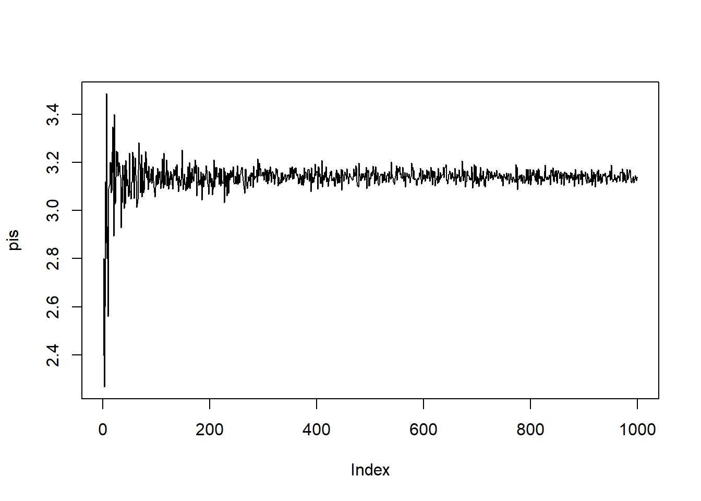

hist(pis,nclas=100)
mean(pis)## [1] 3.139909## [1] NAВзяв iris data.frame, для первых двух колонок получить список содержащий матрицы для каждого ряда со значениями строки и суммы колоник без учета данных строки
iris\[1\]
l=list()
for (i in 1:length(iris[,1]))
{
v=c(iris[i,1],sum(iris[,1])-iris[i,1],iris[i,2],sum(iris[,2])-iris[i,2])
dim(v)=c(2,2)
l2=list(v)
l=c(l,l2)
}
l## [[1]]
## [,1] [,2]
## [1,] 5.1 3.5
## [2,] 871.4 455.1
##
## [[2]]
## [,1] [,2]
## [1,] 4.9 3.0
## [2,] 871.6 455.6
##
## [[3]]
## [,1] [,2]
## [1,] 4.7 3.2
## [2,] 871.8 455.4
##
## [[4]]
## [,1] [,2]
## [1,] 4.6 3.1
## [2,] 871.9 455.5
##
## [[5]]
## [,1] [,2]
## [1,] 5.0 3.6
## [2,] 871.5 455.0
##
## [[6]]
## [,1] [,2]
## [1,] 5.4 3.9
## [2,] 871.1 454.7
##
## [[7]]
## [,1] [,2]
## [1,] 4.6 3.4
## [2,] 871.9 455.2
##
## [[8]]
## [,1] [,2]
## [1,] 5.0 3.4
## [2,] 871.5 455.2
##
## [[9]]
## [,1] [,2]
## [1,] 4.4 2.9
## [2,] 872.1 455.7
##
## [[10]]
## [,1] [,2]
## [1,] 4.9 3.1
## [2,] 871.6 455.5
##
## [[11]]
## [,1] [,2]
## [1,] 5.4 3.7
## [2,] 871.1 454.9
##
## [[12]]
## [,1] [,2]
## [1,] 4.8 3.4
## [2,] 871.7 455.2
##
## [[13]]
## [,1] [,2]
## [1,] 4.8 3.0
## [2,] 871.7 455.6
##
## [[14]]
## [,1] [,2]
## [1,] 4.3 3.0
## [2,] 872.2 455.6
##
## [[15]]
## [,1] [,2]
## [1,] 5.8 4.0
## [2,] 870.7 454.6
##
## [[16]]
## [,1] [,2]
## [1,] 5.7 4.4
## [2,] 870.8 454.2
##
## [[17]]
## [,1] [,2]
## [1,] 5.4 3.9
## [2,] 871.1 454.7
##
## [[18]]
## [,1] [,2]
## [1,] 5.1 3.5
## [2,] 871.4 455.1
##
## [[19]]
## [,1] [,2]
## [1,] 5.7 3.8
## [2,] 870.8 454.8
##
## [[20]]
## [,1] [,2]
## [1,] 5.1 3.8
## [2,] 871.4 454.8
##
## [[21]]
## [,1] [,2]
## [1,] 5.4 3.4
## [2,] 871.1 455.2
##
## [[22]]
## [,1] [,2]
## [1,] 5.1 3.7
## [2,] 871.4 454.9
##
## [[23]]
## [,1] [,2]
## [1,] 4.6 3.6
## [2,] 871.9 455.0
##
## [[24]]
## [,1] [,2]
## [1,] 5.1 3.3
## [2,] 871.4 455.3
##
## [[25]]
## [,1] [,2]
## [1,] 4.8 3.4
## [2,] 871.7 455.2
##
## [[26]]
## [,1] [,2]
## [1,] 5.0 3.0
## [2,] 871.5 455.6
##
## [[27]]
## [,1] [,2]
## [1,] 5.0 3.4
## [2,] 871.5 455.2
##
## [[28]]
## [,1] [,2]
## [1,] 5.2 3.5
## [2,] 871.3 455.1
##
## [[29]]
## [,1] [,2]
## [1,] 5.2 3.4
## [2,] 871.3 455.2
##
## [[30]]
## [,1] [,2]
## [1,] 4.7 3.2
## [2,] 871.8 455.4
##
## [[31]]
## [,1] [,2]
## [1,] 4.8 3.1
## [2,] 871.7 455.5
##
## [[32]]
## [,1] [,2]
## [1,] 5.4 3.4
## [2,] 871.1 455.2
##
## [[33]]
## [,1] [,2]
## [1,] 5.2 4.1
## [2,] 871.3 454.5
##
## [[34]]
## [,1] [,2]
## [1,] 5.5 4.2
## [2,] 871.0 454.4
##
## [[35]]
## [,1] [,2]
## [1,] 4.9 3.1
## [2,] 871.6 455.5
##
## [[36]]
## [,1] [,2]
## [1,] 5.0 3.2
## [2,] 871.5 455.4
##
## [[37]]
## [,1] [,2]
## [1,] 5.5 3.5
## [2,] 871.0 455.1
##
## [[38]]
## [,1] [,2]
## [1,] 4.9 3.6
## [2,] 871.6 455.0
##
## [[39]]
## [,1] [,2]
## [1,] 4.4 3.0
## [2,] 872.1 455.6
##
## [[40]]
## [,1] [,2]
## [1,] 5.1 3.4
## [2,] 871.4 455.2
##
## [[41]]
## [,1] [,2]
## [1,] 5.0 3.5
## [2,] 871.5 455.1
##
## [[42]]
## [,1] [,2]
## [1,] 4.5 2.3
## [2,] 872.0 456.3
##
## [[43]]
## [,1] [,2]
## [1,] 4.4 3.2
## [2,] 872.1 455.4
##
## [[44]]
## [,1] [,2]
## [1,] 5.0 3.5
## [2,] 871.5 455.1
##
## [[45]]
## [,1] [,2]
## [1,] 5.1 3.8
## [2,] 871.4 454.8
##
## [[46]]
## [,1] [,2]
## [1,] 4.8 3.0
## [2,] 871.7 455.6
##
## [[47]]
## [,1] [,2]
## [1,] 5.1 3.8
## [2,] 871.4 454.8
##
## [[48]]
## [,1] [,2]
## [1,] 4.6 3.2
## [2,] 871.9 455.4
##
## [[49]]
## [,1] [,2]
## [1,] 5.3 3.7
## [2,] 871.2 454.9
##
## [[50]]
## [,1] [,2]
## [1,] 5.0 3.3
## [2,] 871.5 455.3
##
## [[51]]
## [,1] [,2]
## [1,] 7.0 3.2
## [2,] 869.5 455.4
##
## [[52]]
## [,1] [,2]
## [1,] 6.4 3.2
## [2,] 870.1 455.4
##
## [[53]]
## [,1] [,2]
## [1,] 6.9 3.1
## [2,] 869.6 455.5
##
## [[54]]
## [,1] [,2]
## [1,] 5.5 2.3
## [2,] 871.0 456.3
##
## [[55]]
## [,1] [,2]
## [1,] 6.5 2.8
## [2,] 870.0 455.8
##
## [[56]]
## [,1] [,2]
## [1,] 5.7 2.8
## [2,] 870.8 455.8
##
## [[57]]
## [,1] [,2]
## [1,] 6.3 3.3
## [2,] 870.2 455.3
##
## [[58]]
## [,1] [,2]
## [1,] 4.9 2.4
## [2,] 871.6 456.2
##
## [[59]]
## [,1] [,2]
## [1,] 6.6 2.9
## [2,] 869.9 455.7
##
## [[60]]
## [,1] [,2]
## [1,] 5.2 2.7
## [2,] 871.3 455.9
##
## [[61]]
## [,1] [,2]
## [1,] 5.0 2.0
## [2,] 871.5 456.6
##
## [[62]]
## [,1] [,2]
## [1,] 5.9 3.0
## [2,] 870.6 455.6
##
## [[63]]
## [,1] [,2]
## [1,] 6.0 2.2
## [2,] 870.5 456.4
##
## [[64]]
## [,1] [,2]
## [1,] 6.1 2.9
## [2,] 870.4 455.7
##
## [[65]]
## [,1] [,2]
## [1,] 5.6 2.9
## [2,] 870.9 455.7
##
## [[66]]
## [,1] [,2]
## [1,] 6.7 3.1
## [2,] 869.8 455.5
##
## [[67]]
## [,1] [,2]
## [1,] 5.6 3.0
## [2,] 870.9 455.6
##
## [[68]]
## [,1] [,2]
## [1,] 5.8 2.7
## [2,] 870.7 455.9
##
## [[69]]
## [,1] [,2]
## [1,] 6.2 2.2
## [2,] 870.3 456.4
##
## [[70]]
## [,1] [,2]
## [1,] 5.6 2.5
## [2,] 870.9 456.1
##
## [[71]]
## [,1] [,2]
## [1,] 5.9 3.2
## [2,] 870.6 455.4
##
## [[72]]
## [,1] [,2]
## [1,] 6.1 2.8
## [2,] 870.4 455.8
##
## [[73]]
## [,1] [,2]
## [1,] 6.3 2.5
## [2,] 870.2 456.1
##
## [[74]]
## [,1] [,2]
## [1,] 6.1 2.8
## [2,] 870.4 455.8
##
## [[75]]
## [,1] [,2]
## [1,] 6.4 2.9
## [2,] 870.1 455.7
##
## [[76]]
## [,1] [,2]
## [1,] 6.6 3.0
## [2,] 869.9 455.6
##
## [[77]]
## [,1] [,2]
## [1,] 6.8 2.8
## [2,] 869.7 455.8
##
## [[78]]
## [,1] [,2]
## [1,] 6.7 3.0
## [2,] 869.8 455.6
##
## [[79]]
## [,1] [,2]
## [1,] 6.0 2.9
## [2,] 870.5 455.7
##
## [[80]]
## [,1] [,2]
## [1,] 5.7 2.6
## [2,] 870.8 456.0
##
## [[81]]
## [,1] [,2]
## [1,] 5.5 2.4
## [2,] 871.0 456.2
##
## [[82]]
## [,1] [,2]
## [1,] 5.5 2.4
## [2,] 871.0 456.2
##
## [[83]]
## [,1] [,2]
## [1,] 5.8 2.7
## [2,] 870.7 455.9
##
## [[84]]
## [,1] [,2]
## [1,] 6.0 2.7
## [2,] 870.5 455.9
##
## [[85]]
## [,1] [,2]
## [1,] 5.4 3.0
## [2,] 871.1 455.6
##
## [[86]]
## [,1] [,2]
## [1,] 6.0 3.4
## [2,] 870.5 455.2
##
## [[87]]
## [,1] [,2]
## [1,] 6.7 3.1
## [2,] 869.8 455.5
##
## [[88]]
## [,1] [,2]
## [1,] 6.3 2.3
## [2,] 870.2 456.3
##
## [[89]]
## [,1] [,2]
## [1,] 5.6 3.0
## [2,] 870.9 455.6
##
## [[90]]
## [,1] [,2]
## [1,] 5.5 2.5
## [2,] 871.0 456.1
##
## [[91]]
## [,1] [,2]
## [1,] 5.5 2.6
## [2,] 871.0 456.0
##
## [[92]]
## [,1] [,2]
## [1,] 6.1 3.0
## [2,] 870.4 455.6
##
## [[93]]
## [,1] [,2]
## [1,] 5.8 2.6
## [2,] 870.7 456.0
##
## [[94]]
## [,1] [,2]
## [1,] 5.0 2.3
## [2,] 871.5 456.3
##
## [[95]]
## [,1] [,2]
## [1,] 5.6 2.7
## [2,] 870.9 455.9
##
## [[96]]
## [,1] [,2]
## [1,] 5.7 3.0
## [2,] 870.8 455.6
##
## [[97]]
## [,1] [,2]
## [1,] 5.7 2.9
## [2,] 870.8 455.7
##
## [[98]]
## [,1] [,2]
## [1,] 6.2 2.9
## [2,] 870.3 455.7
##
## [[99]]
## [,1] [,2]
## [1,] 5.1 2.5
## [2,] 871.4 456.1
##
## [[100]]
## [,1] [,2]
## [1,] 5.7 2.8
## [2,] 870.8 455.8
##
## [[101]]
## [,1] [,2]
## [1,] 6.3 3.3
## [2,] 870.2 455.3
##
## [[102]]
## [,1] [,2]
## [1,] 5.8 2.7
## [2,] 870.7 455.9
##
## [[103]]
## [,1] [,2]
## [1,] 7.1 3.0
## [2,] 869.4 455.6
##
## [[104]]
## [,1] [,2]
## [1,] 6.3 2.9
## [2,] 870.2 455.7
##
## [[105]]
## [,1] [,2]
## [1,] 6.5 3.0
## [2,] 870.0 455.6
##
## [[106]]
## [,1] [,2]
## [1,] 7.6 3.0
## [2,] 868.9 455.6
##
## [[107]]
## [,1] [,2]
## [1,] 4.9 2.5
## [2,] 871.6 456.1
##
## [[108]]
## [,1] [,2]
## [1,] 7.3 2.9
## [2,] 869.2 455.7
##
## [[109]]
## [,1] [,2]
## [1,] 6.7 2.5
## [2,] 869.8 456.1
##
## [[110]]
## [,1] [,2]
## [1,] 7.2 3.6
## [2,] 869.3 455.0
##
## [[111]]
## [,1] [,2]
## [1,] 6.5 3.2
## [2,] 870.0 455.4
##
## [[112]]
## [,1] [,2]
## [1,] 6.4 2.7
## [2,] 870.1 455.9
##
## [[113]]
## [,1] [,2]
## [1,] 6.8 3.0
## [2,] 869.7 455.6
##
## [[114]]
## [,1] [,2]
## [1,] 5.7 2.5
## [2,] 870.8 456.1
##
## [[115]]
## [,1] [,2]
## [1,] 5.8 2.8
## [2,] 870.7 455.8
##
## [[116]]
## [,1] [,2]
## [1,] 6.4 3.2
## [2,] 870.1 455.4
##
## [[117]]
## [,1] [,2]
## [1,] 6.5 3.0
## [2,] 870.0 455.6
##
## [[118]]
## [,1] [,2]
## [1,] 7.7 3.8
## [2,] 868.8 454.8
##
## [[119]]
## [,1] [,2]
## [1,] 7.7 2.6
## [2,] 868.8 456.0
##
## [[120]]
## [,1] [,2]
## [1,] 6.0 2.2
## [2,] 870.5 456.4
##
## [[121]]
## [,1] [,2]
## [1,] 6.9 3.2
## [2,] 869.6 455.4
##
## [[122]]
## [,1] [,2]
## [1,] 5.6 2.8
## [2,] 870.9 455.8
##
## [[123]]
## [,1] [,2]
## [1,] 7.7 2.8
## [2,] 868.8 455.8
##
## [[124]]
## [,1] [,2]
## [1,] 6.3 2.7
## [2,] 870.2 455.9
##
## [[125]]
## [,1] [,2]
## [1,] 6.7 3.3
## [2,] 869.8 455.3
##
## [[126]]
## [,1] [,2]
## [1,] 7.2 3.2
## [2,] 869.3 455.4
##
## [[127]]
## [,1] [,2]
## [1,] 6.2 2.8
## [2,] 870.3 455.8
##
## [[128]]
## [,1] [,2]
## [1,] 6.1 3.0
## [2,] 870.4 455.6
##
## [[129]]
## [,1] [,2]
## [1,] 6.4 2.8
## [2,] 870.1 455.8
##
## [[130]]
## [,1] [,2]
## [1,] 7.2 3.0
## [2,] 869.3 455.6
##
## [[131]]
## [,1] [,2]
## [1,] 7.4 2.8
## [2,] 869.1 455.8
##
## [[132]]
## [,1] [,2]
## [1,] 7.9 3.8
## [2,] 868.6 454.8
##
## [[133]]
## [,1] [,2]
## [1,] 6.4 2.8
## [2,] 870.1 455.8
##
## [[134]]
## [,1] [,2]
## [1,] 6.3 2.8
## [2,] 870.2 455.8
##
## [[135]]
## [,1] [,2]
## [1,] 6.1 2.6
## [2,] 870.4 456.0
##
## [[136]]
## [,1] [,2]
## [1,] 7.7 3.0
## [2,] 868.8 455.6
##
## [[137]]
## [,1] [,2]
## [1,] 6.3 3.4
## [2,] 870.2 455.2
##
## [[138]]
## [,1] [,2]
## [1,] 6.4 3.1
## [2,] 870.1 455.5
##
## [[139]]
## [,1] [,2]
## [1,] 6.0 3.0
## [2,] 870.5 455.6
##
## [[140]]
## [,1] [,2]
## [1,] 6.9 3.1
## [2,] 869.6 455.5
##
## [[141]]
## [,1] [,2]
## [1,] 6.7 3.1
## [2,] 869.8 455.5
##
## [[142]]
## [,1] [,2]
## [1,] 6.9 3.1
## [2,] 869.6 455.5
##
## [[143]]
## [,1] [,2]
## [1,] 5.8 2.7
## [2,] 870.7 455.9
##
## [[144]]
## [,1] [,2]
## [1,] 6.8 3.2
## [2,] 869.7 455.4
##
## [[145]]
## [,1] [,2]
## [1,] 6.7 3.3
## [2,] 869.8 455.3
##
## [[146]]
## [,1] [,2]
## [1,] 6.7 3.0
## [2,] 869.8 455.6
##
## [[147]]
## [,1] [,2]
## [1,] 6.3 2.5
## [2,] 870.2 456.1
##
## [[148]]
## [,1] [,2]
## [1,] 6.5 3.0
## [2,] 870.0 455.6
##
## [[149]]
## [,1] [,2]
## [1,] 6.2 3.4
## [2,] 870.3 455.2
##
## [[150]]
## [,1] [,2]
## [1,] 5.9 3.0
## [2,] 870.6 455.6Функция Apply
apply (data.frame(), 1 or 2, FUNCTION) 1 - функция будет применена к каждой строке 2 - к каждой колонке
lapply(list, FUNCTION) - аналогичная функция, которая в качестве результата выдает список sapply(list, FUNCTION) - аналогичная функция, которая в качестве результата выдает вектор tapply(vector,factor, FUN) - выбирает и группирует строки по градациям фактора и применяет функцию к каждой полученной группе
apply(iris[,1:4],2,sum)## Sepal.Length Sepal.Width Petal.Length Petal.Width
## 876.5 458.6 563.7 179.9tapply(iris$Sepal.Length, iris$Species, sum)## setosa versicolor virginica
## 250.3 296.8 329.4Базовая графика - функция plot(x,y)
x=c(2,8,6)
y=c(3,7,9)
plot(5:10)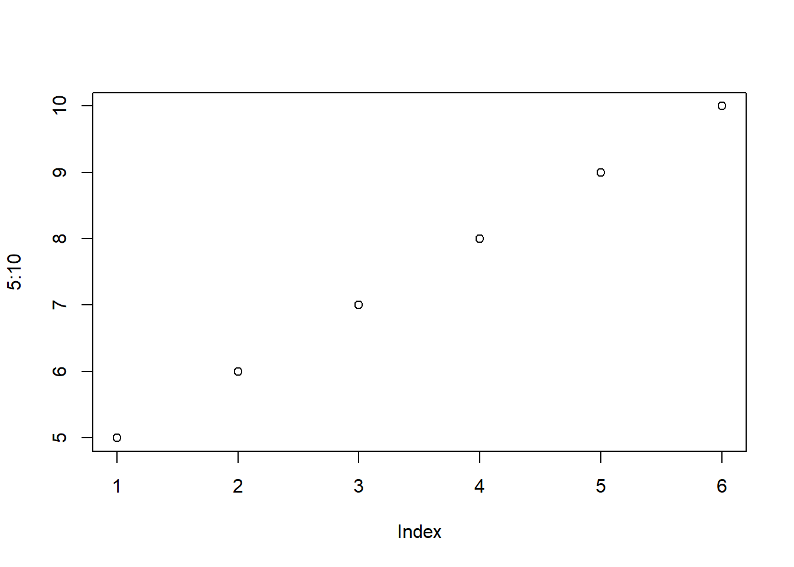
plot(x,y)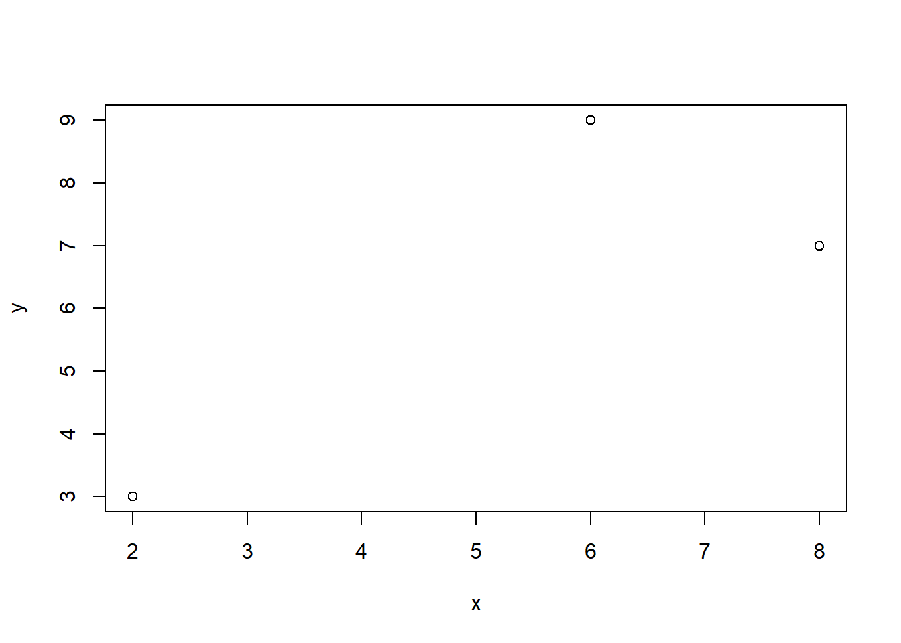
plot(x,y, type="l")plot(x,y, type="b")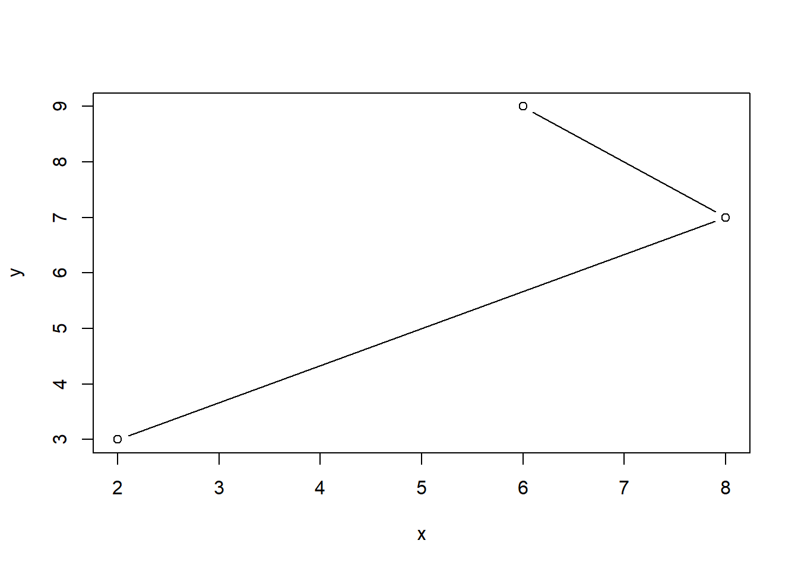
plot(x,y,type="h")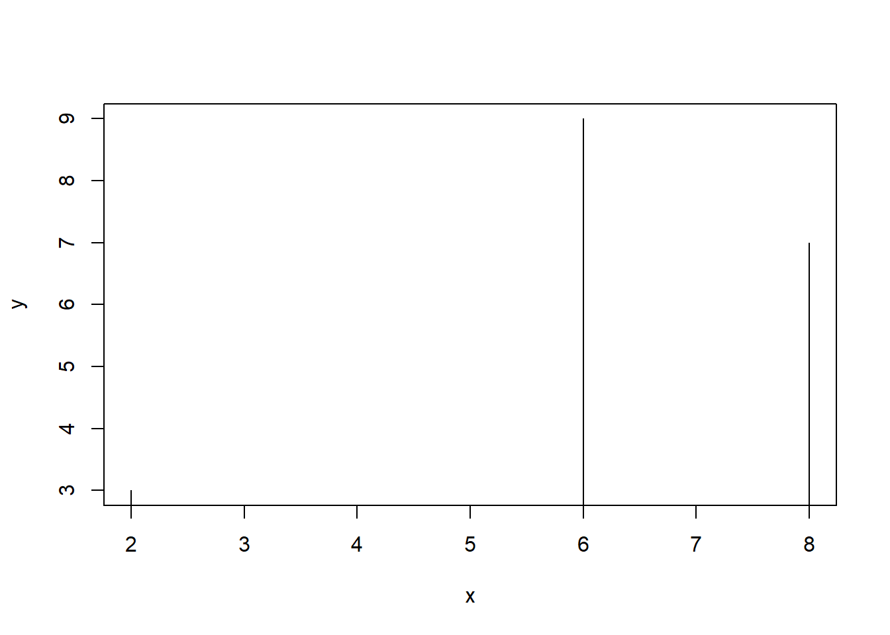
plot(x,y,type="s", col=rgb(.90,.10,.10,.9))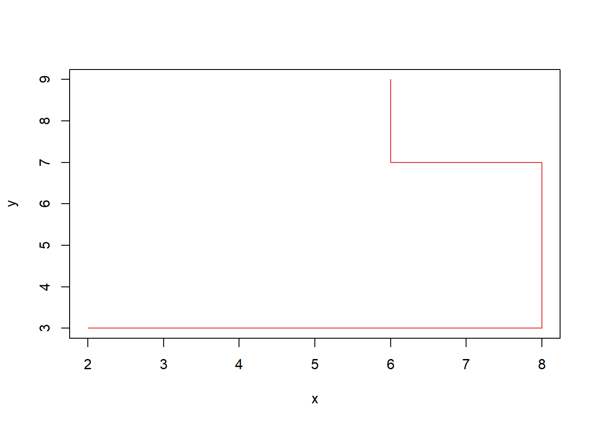
plot(seq(-10,10,.01),sin(seq(-10,10,.01)), type="h")plot(seq(-10,10,.01), sin(seq(-10,10,.01)), col=rgb(.90,.10,.10,.9), type="h", xlim=c(-20,20), ylim=c(-5,5))plot(seq(-10,10,.01),sin(seq(-10,10,.01)), col=rgb(.90,.10,.10,.9), type="h", xlim=c(-20,20), ylim=c(-5,5),main="My first cos(x)",xlab="x",ylab="sin(x)")plot(seq(-10,10,.01),sin(seq(-10,10,.01)), col=rgb(.90,.10,.10,.9), type="l", xlim=c(-20,20), ylim=c(-5,5),main="My first cos(x)",xlab="x",ylab="sin(x)",lwd=.4)plot(seq(-10,10,.01),sin(seq(-10,10,.01)), col=rgb(.90,.10,.10,.9), type="l", xlim=c(-20,20), ylim=c(-5,5),main="My first cos(x)",xlab="x",ylab="sin(x)",lwd=4, lty=4)plot(seq(-10,10,.01),sin(seq(-10,10,.01)), col=rgb(.90,.10,.10,.9), type="b", xlim=c(-20,20), ylim=c(-5,5),main="My first cos(x)",xlab="x",ylab="sin(x)",lwd=4, lty=4, pch=4)####Линии
plot(seq(-10,10,.01),sin(seq(-10,10,.01)), type="l")
lines(seq(-10,10,.01),rep(c(0),2001), type="l", col="red")x=(seq(-10,10,.01))
plot(x, (1-x^2)^.5, type="l",ylim=c(1,-1), xlim=c(-1,1))
lines(x, -((1-x^2)^.5))
lines(rep(c(0),401),seq(-2,2,.01))
lines(seq(-2,2,.01),rep(c(0),401))Пакет ggplot2
#install.packages("ggplot2")
library(ggplot2)Давайте посмотрим на содержимое mtcars с помощью функции str()
str(mtcars)## 'data.frame': 32 obs. of 11 variables:
## $ mpg : num 21 21 22.8 21.4 18.7 18.1 14.3 24.4 22.8 19.2 ...
## $ cyl : num 6 6 4 6 8 6 8 4 4 6 ...
## $ disp: num 160 160 108 258 360 ...
## $ hp : num 110 110 93 110 175 105 245 62 95 123 ...
## $ drat: num 3.9 3.9 3.85 3.08 3.15 2.76 3.21 3.69 3.92 3.92 ...
## $ wt : num 2.62 2.88 2.32 3.21 3.44 ...
## $ qsec: num 16.5 17 18.6 19.4 17 ...
## $ vs : num 0 0 1 1 0 1 0 1 1 1 ...
## $ am : num 1 1 1 0 0 0 0 0 0 0 ...
## $ gear: num 4 4 4 3 3 3 3 4 4 4 ...
## $ carb: num 4 4 1 1 2 1 4 2 2 4 ...ggplot(mtcars, aes(x = cyl, y = mpg)) +
geom_point()
Давайте построим график рассматривая cyl как фактор
ggplot(mtcars, aes(x = factor(cyl), y = mpg)) +
geom_point()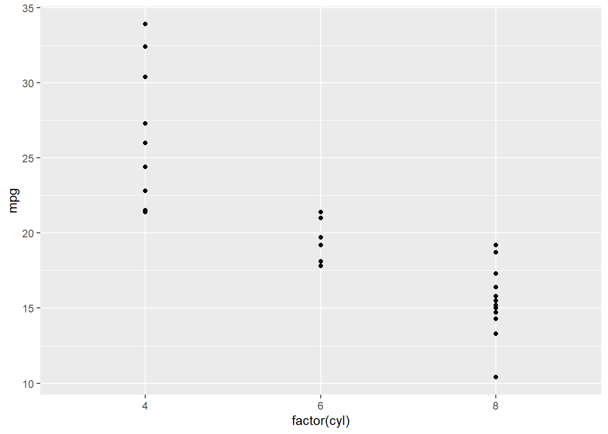
Точечная диаграмма
ggplot(mtcars, aes(x = wt, y = mpg)) +
geom_point()ggplot умеет автоматически создавать легенды для категориальных переменных, например когда вы задаете ею цвето точек.
ggplot(mtcars, aes(x = wt, y = mpg, col = disp)) +
geom_point()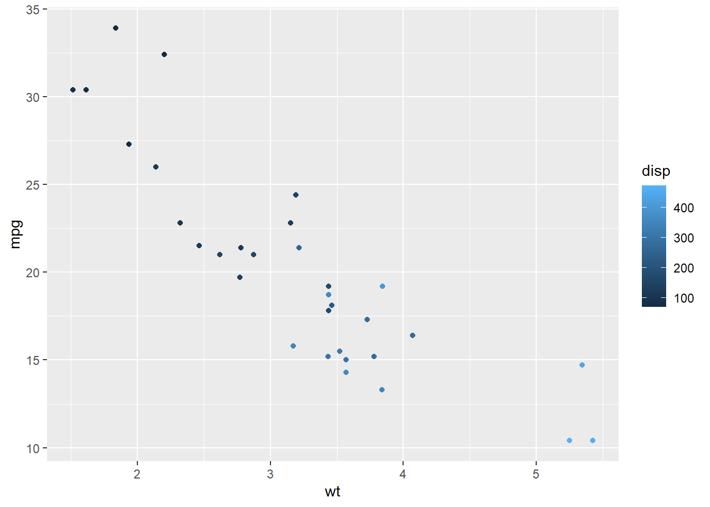
Точкам можно задавать размер
ggplot(mtcars, aes(x = wt, y = mpg, size = disp)) +
geom_point()Добавим geom_point() и geom_smooth() через символ +
ggplot(diamonds, aes(x = carat, y = price)) + geom_point() + geom_smooth()## `geom_smooth()` using method = 'gam' and formula 'y ~ s(x, bs = "cs")'
# The plot you created in the previous exercise
ggplot(diamonds, aes(x = carat, y = price)) +
geom_point() +
geom_smooth()## `geom_smooth()` using method = 'gam' and formula 'y ~ s(x, bs = "cs")'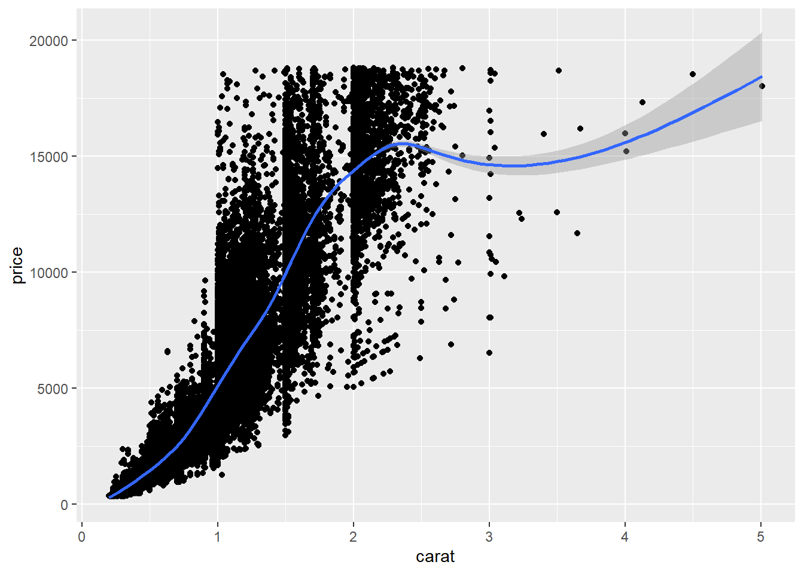
# Copy the above command but show only the smooth line
ggplot(diamonds, aes(x = carat, y = price)) + geom_smooth()## `geom_smooth()` using method = 'gam' and formula 'y ~ s(x, bs = "cs")'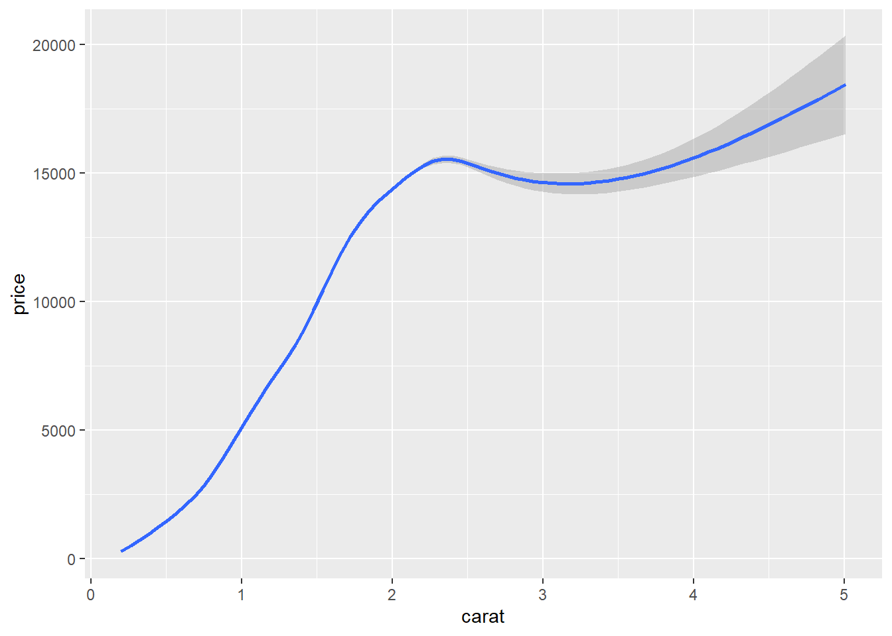
# Copy the above command and assign the correct value to col in aes()
ggplot(diamonds, aes(x = carat, y = price, col=clarity)) +
geom_smooth()## `geom_smooth()` using method = 'gam' and formula 'y ~ s(x, bs = "cs")'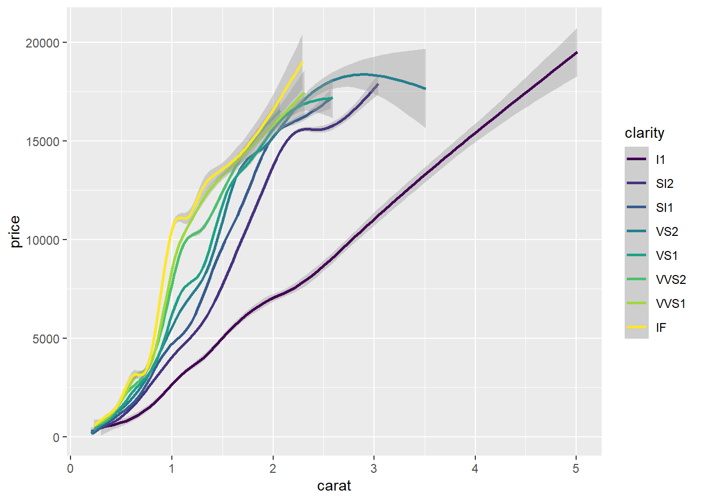
# Keep the color settings from previous command. Plot only the points with argument alpha.
ggplot(diamonds, aes(x = carat, y = price, col=clarity)) +
geom_point(alpha = 0.4)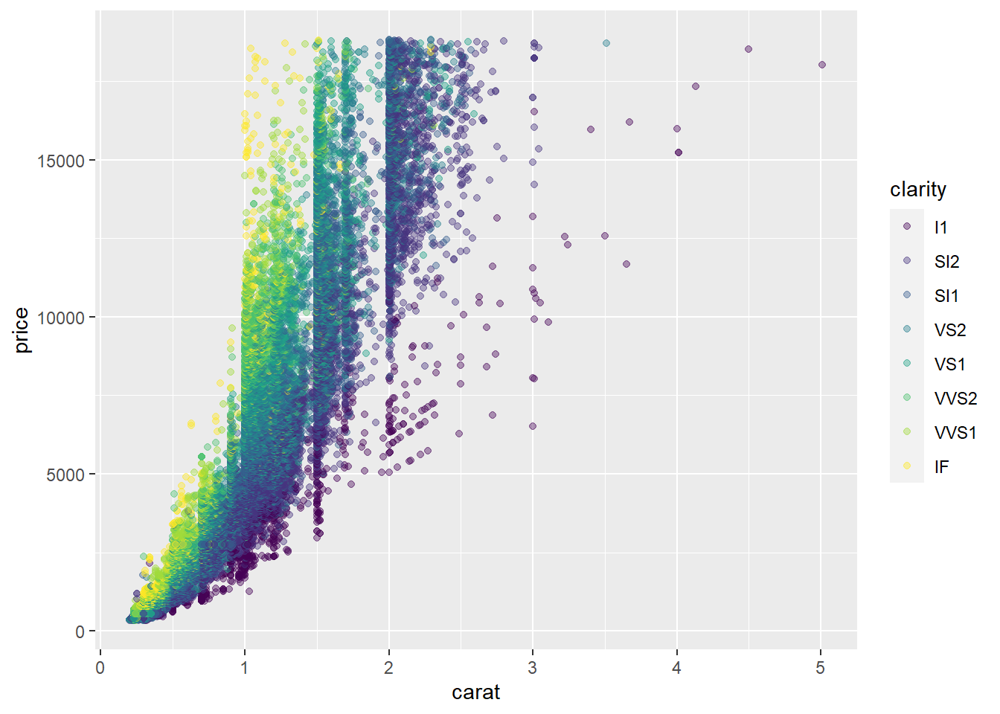

# Create the object containing the data and aes layers: dia_plot
dia_plot = ggplot(diamonds, aes(x = carat, y = price))
# Add a geom layer with + and geom_point()
dia_plot + geom_point()

# Add the same geom layer, but with aes() inside
dia_plot + geom_point(aes(col=clarity))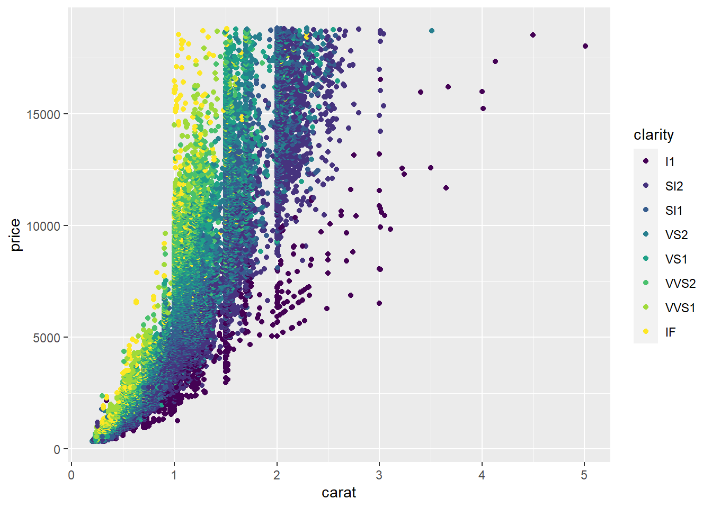